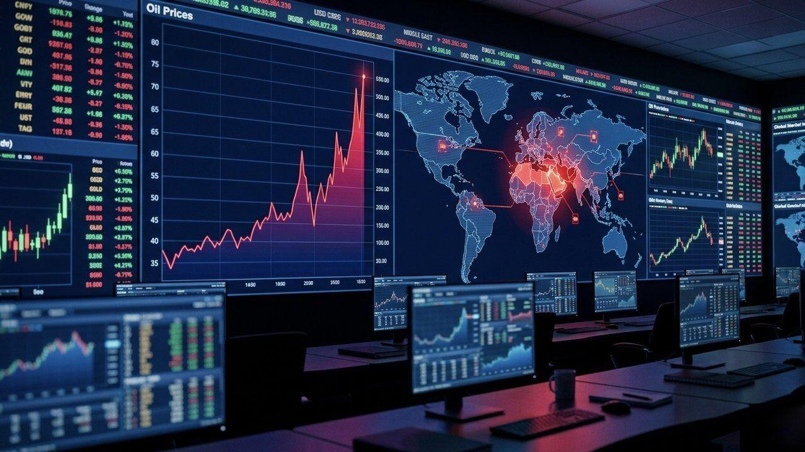
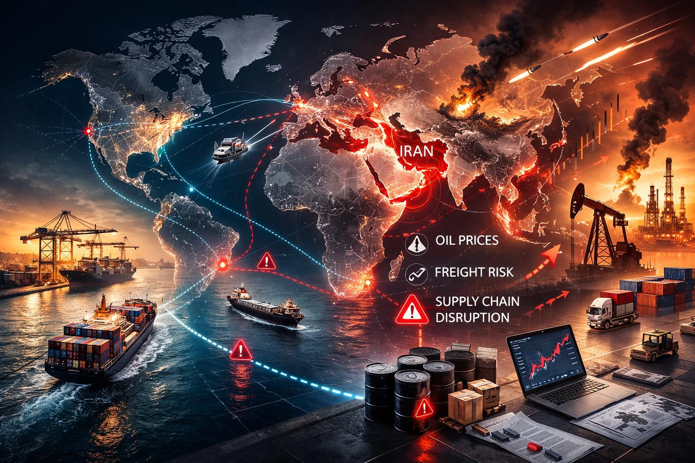
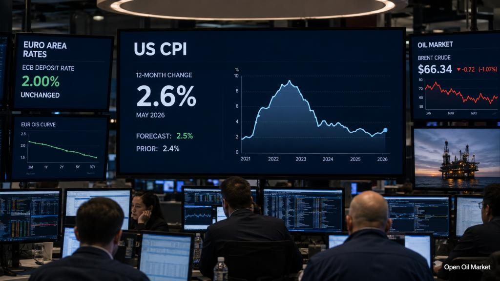
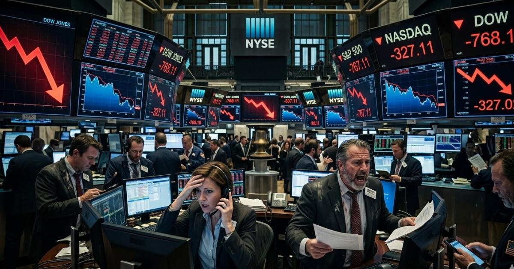

Crises financeiras raramente surgem de um único acontecimento. Em geral, elas são precedidas por uma combinação de desequilíbrios que se acumulam e podem se intensificar quando um choque atinge a economia.
Um conflito pode interromper rotas comerciais e pressionar o petróleo. A energia mais cara pode alimentar a inflação. Com os preços pressionados, os bancos centrais podem ter menos espaço para reduzir os juros. Ao mesmo tempo, governos e empresas precisam refinanciar suas dívidas em condições potencialmente mais caras, enquanto os mercados de ações reavaliam expectativas de lucro.
O cenário de 2026 merece atenção. No relatório World Economic Outlook, publicado em outubro, o Fundo Monetário Internacional (FMI) projeta crescimento mundial de 3,1% e inflação global de 4,7% para este ano. O próprio Fundo ressalta riscos associados a conflitos, tensões comerciais, vulnerabilidades fiscais e uma possível revisão das expectativas em torno da inteligência artificial.
1. Conflitos geopolíticos: quando a instabilidade atravessa fronteiras

A economia mundial depende de uma rede de fornecedores, rotas marítimas, portos, fontes de energia e relações comerciais. Quando um conflito atinge uma região importante para essa rede, seus efeitos podem se espalhar muito além das fronteiras envolvidas.
O Oriente Médio, por exemplo, ocupa posição estratégica no mercado de energia e em rotas relevantes para o comércio internacional. Uma escalada de tensões pode elevar custos de transporte e seguro, interromper embarques e aumentar a incerteza sobre a oferta de petróleo e outras matérias-primas.
Entre os possíveis canais de transmissão estão:
- interrupções ou desvios em rotas de transporte marítimo;
- aumento dos custos de frete e seguro;
- volatilidade nos preços de petróleo, gás e outras commodities;
- atrasos na entrega de insumos e produtos;
- maior aversão ao risco e mudanças nos fluxos internacionais de capital.
Como isso pode chegar ao Brasil?
Mesmo distante de uma zona de conflito, o Brasil pode sentir os efeitos por meio dos combustíveis, dos fertilizantes, do câmbio, dos custos de importação e das condições de financiamento externo. Por outro lado, algumas empresas exportadoras podem se beneficiar de preços internacionais mais altos para produtos que vendem.
O efeito líquido depende da duração do conflito, dos produtos afetados, da posição comercial brasileira e da reação dos mercados. Por isso, não basta acompanhar manchetes: é importante observar se a instabilidade está alterando efetivamente preços, oferta e expectativas.
2. Petróleo e energia: o risco de uma nova pressão inflacionária
O petróleo influencia uma ampla cadeia de atividades. Seu preço afeta combustíveis, transporte, produção industrial, produtos químicos e parte dos custos agrícolas. Quando há uma alta persistente, empresas podem repassar parte dos custos aos consumidores, contribuindo para a inflação.
O Commodity Markets Outlook, divulgado pelo Banco Mundial em 28 de outubro de 2026, projeta alta de 23% para o conjunto das commodities neste ano. Para os preços de energia, a estimativa é de aumento de 32%. O relatório projeta o Brent a uma média de US$ 91 por barril em 2026, ante US$ 69 em 2025, com recuo para US$ 79 em 2027.
Petróleo Brent — comparação anual
Preços médios anuais em dólares por barril. Os valores de 2026 e 2027 são projeções do Banco Mundial.
* Projeções. Fonte: Banco Mundial, Commodity Markets Outlook, outubro de 2026.
Dados utilizados no gráfico
| Ano | Preço médio | Status |
|---|---|---|
| 2025 | US$ 69/barril | Referência histórica citada pelo Banco Mundial |
| 2026 | US$ 91/barril | Projeção |
| 2027 | US$ 79/barril | Projeção |
Valores em dólares por barril. São médias anuais estimadas pelo Banco Mundial, não cotações diárias nem garantias de preço.
O próprio Banco Mundial ressalta que a projeção depende da evolução dos conflitos e da oferta global. Uma deterioração maior das condições de produção e transporte poderia pressionar ainda mais os preços; uma normalização da oferta poderia produzir o efeito contrário.
Quem pode ganhar e quem pode perder?
Uma alta do petróleo pode favorecer determinadas produtoras de energia, mas elevar os custos de companhias aéreas, transportadoras e indústrias consumidoras de combustíveis. Mesmo dentro de um setor, o resultado varia conforme custos, contratos, endividamento, capacidade de repasse e estratégia de cada empresa.
3. Inflação e juros: o dilema dos bancos centrais

Os bancos centrais precisam equilibrar a estabilidade dos preços e as condições da atividade econômica. Quando a inflação permanece elevada, podem manter juros restritivos por mais tempo ou, em determinadas circunstâncias, voltar a elevá-los.
Juros altos encarecem empréstimos e financiamentos, podem reduzir o consumo e tornam mais exigentes as condições para investimentos empresariais. Também mudam a comparação entre renda fixa e renda variável: quando títulos oferecem retornos maiores, alguns investidores passam a exigir um desconto maior para assumir riscos em ações e outros ativos.
Segundo o FMI, a inflação global deve alcançar 4,7% em 2026 e recuar para 4,1% em 2027. A projeção reforça que o processo de desinflação pode ser irregular e que choques de energia e alimentos podem dificultar a trajetória dos preços.
Por que isso importa para o investidor brasileiro?
As taxas de juros das principais economias influenciam os fluxos internacionais de capital, o dólar e as condições de financiamento. Se os rendimentos de títulos de países desenvolvidos permanecem elevados, ativos de economias emergentes podem enfrentar maior competição por recursos.
No Brasil, inflação, expectativas, política monetária e situação fiscal também influenciam a curva de juros e o retorno exigido pelos investidores. O cenário externo é uma parte da análise, não uma explicação única para os movimentos domésticos.
4. Endividamento público: quando o custo da dívida vira preocupação
Dívida pública não é sinônimo automático de falência. Governos emitem títulos para financiar suas necessidades, administrar o caixa e refinanciar obrigações que vencem. Esses papéis são comprados por bancos, fundos, seguradoras, investidores institucionais e pessoas físicas.
A preocupação aumenta quando a trajetória da dívida parece difícil de sustentar ou quando o governo precisa pagar juros cada vez maiores para conseguir financiamento. Nesse caso, o custo de rolagem pode crescer e reduzir o espaço disponível para outras despesas e políticas públicas.
O que determina a sustentabilidade?
- Juros: o custo médio que o governo paga para financiar sua dívida.
- Crescimento econômico: a expansão da economia e da base de arrecadação.
- Resultado primário: a diferença entre receitas e despesas antes dos juros.
- Prazo e composição: vencimentos, indexadores, moeda e perfil dos credores.
- Confiança: a percepção sobre a capacidade e a disposição de honrar compromissos.
O FMI alertou, em seu relatório de estabilidade financeira de outubro de 2026, que preocupações fiscais e uma inflação que volte a acelerar podem provocar aumentos expressivos nos rendimentos dos títulos soberanos. Como esses papéis servem de referência para diversas taxas de mercado, o impacto pode alcançar empresas, bancos e investidores.
E o Brasil?
Para avaliar o risco brasileiro, é importante observar a dívida em relação ao PIB, o resultado fiscal, a despesa com juros, o prazo médio dos títulos e a composição da dívida. Uma análise séria não deve se limitar a um número isolado: precisa considerar a trajetória e a capacidade de financiamento do país.
5. Bolsas mundiais: existe risco de uma grande correção?

O preço de uma ação reflete expectativas sobre os resultados futuros de uma empresa, os juros, os riscos e o retorno que os investidores exigem. Por isso, uma companhia pode continuar crescendo e, ainda assim, ver suas ações cair se o mercado concluir que as expectativas anteriores eram otimistas demais.
Um dos pontos de atenção apontados pelo FMI em outubro de 2026 é a concentração de exposições ligadas à inteligência artificial. Se os investimentos no setor ou a rentabilidade esperada decepcionarem, ativos relacionados podem passar por uma reavaliação. O Fundo observa que alavancagem e posições concentradas podem amplificar os efeitos de uma correção.
Concentração e alavancagem
Quando poucas empresas representam uma parcela elevada de um índice, uma queda nesses papéis pode influenciar o desempenho de todo o indicador. Isso também significa que um fundo ou ETF com muitos ativos pode continuar exposto a um mesmo fator de risco, caso suas posições estejam concentradas em empresas ou setores semelhantes.
A alavancagem acrescenta outra vulnerabilidade. Usar recursos emprestados pode ampliar ganhos, mas também aumenta perdas e pode provocar vendas forçadas quando os preços caem e as exigências de margem sobem.
Entre os indicadores úteis para acompanhar estão:
- avaliações das empresas em relação a lucros, receitas e fluxo de caixa;
- concentração setorial e peso das maiores companhias nos índices;
- endividamento corporativo e custo de financiamento;
- níveis de alavancagem e condições de liquidez;
- resultados efetivos frente às expectativas do mercado.
A combinação dos riscos é o que merece mais atenção
Cada um desses fatores pode ser administrável isoladamente. O risco aumenta quando vários acontecem ao mesmo tempo e se reforçam. Um choque de energia pode pressionar a inflação; juros mais altos podem encarecer o refinanciamento de governos e empresas; e uma correção de ativos pode apertar as condições financeiras justamente quando a economia já está fragilizada.
Ainda assim, reconhecer vulnerabilidades não significa afirmar que uma crise financeira global está prestes a acontecer. O FMI descreve os mercados como resilientes, apoiados por crescimento e resultados corporativos, mas considera que os riscos de estabilidade financeira permanecem elevados. Entre os pontos de atenção estão uma correção ligada à inteligência artificial, uma alta acentuada dos rendimentos soberanos e ameaças cibernéticas.
Como o investidor pode se preparar?
O investidor não precisa acertar a data de uma crise para cuidar do patrimônio. O mais importante é construir uma estratégia coerente com seus objetivos, seu prazo e sua tolerância a perdas.
1. Mantenha uma reserva de emergência
Priorize liquidez e baixo risco para despesas inesperadas. A reserva reduz a chance de precisar vender ativos de longo prazo em um momento desfavorável.
2. Diversifique de verdade
Distribua o patrimônio entre classes, emissores, setores e geografias, observando se diferentes investimentos não dependem do mesmo fator de risco.
3. Avalie a exposição internacional
Ativos no exterior podem diversificar riscos locais, mas também trazem volatilidade cambial, riscos de mercado, custos e particularidades tributárias.
4. Acompanhe fundamentos, não apenas manchetes
Observe inflação, juros, lucros, endividamento, fluxo de caixa e preço dos ativos. Notícias isoladas raramente são suficientes para justificar uma mudança de estratégia.
5. Respeite seu horizonte de investimento
Recursos que serão usados em breve não devem ficar expostos ao mesmo risco de investimentos destinados a objetivos de longo prazo.
6. Evite decisões por medo ou euforia
Reavalie a carteira com critérios definidos. Tentar prever cada movimento do mercado pode levar a compras e vendas impulsivas.
Conclusão: preparação é mais importante do que tentar prever a próxima crise
O cenário econômico de 2026 reúne riscos que merecem acompanhamento: tensões geopolíticas, pressão sobre energia e alimentos, desafios para a política monetária, preocupações fiscais e vulnerabilidades nos mercados financeiros.
Esses fatores podem se combinar e provocar períodos de maior volatilidade. Mas não existe base para transformar riscos em uma afirmação de que uma nova crise global é inevitável. A economia também conta com mecanismos de adaptação, políticas públicas, empresas resilientes e capacidade de resposta dos mercados.
Para o investidor, a principal lição é não depender de uma única previsão. Uma carteira planejada, diversificada e compatível com seus objetivos tende a estar mais preparada para diferentes cenários do que uma estratégia baseada em tentar acertar o momento exato de comprar ou vender.
Investir não é apenas buscar rentabilidade. É compreender riscos, proteger o patrimônio e tomar decisões consistentes ao longo do tempo.
Perguntas frequentes sobre o risco de uma nova crise financeira
O mundo está à beira de uma nova crise financeira em 2026?
Não é possível afirmar isso. Existem riscos relevantes para a economia e os mercados, mas riscos elevados não significam que uma crise seja inevitável. O FMI avalia que os mercados permanecem resilientes, embora vulnerabilidades mereçam atenção.
Quais são os principais riscos para a economia mundial?
Entre os riscos acompanhados nesta matéria estão conflitos geopolíticos, choques nos preços de energia, inflação persistente, juros elevados, vulnerabilidades fiscais e possíveis correções nos mercados financeiros.
Como uma alta do petróleo pode afetar meus investimentos?
O petróleo pode influenciar inflação, custos de empresas, câmbio e expectativas de juros. O impacto varia entre setores: algumas produtoras podem se beneficiar, enquanto empresas que consomem muito combustível podem enfrentar custos maiores.
Juros elevados são sempre ruins para os investimentos?
Não. Juros elevados podem favorecer a rentabilidade de determinados títulos de renda fixa, dependendo das condições de compra, mas também podem pressionar o crédito, a atividade econômica e a avaliação de ativos de risco.
A dívida pública significa que um país está quebrado?
Não. Dívida pública é um instrumento de financiamento utilizado por governos. A análise precisa considerar a capacidade de pagamento, o custo dos juros, o crescimento econômico, o resultado fiscal e o perfil dos vencimentos.
O que fazer para proteger a carteira em períodos de incerteza?
Não existe proteção universal. Medidas como reserva de emergência, diversificação, controle de liquidez, análise dos riscos e adequação dos investimentos ao horizonte de cada objetivo podem ajudar a reduzir vulnerabilidades.
Fontes e leituras complementares
- Fundo Monetário Internacional — World Economic Outlook, outubro de 2026 : projeções de crescimento, inflação e riscos para a economia mundial.
- Fundo Monetário Internacional — Global Financial Stability Report, outubro de 2026 : riscos para a estabilidade financeira, mercados, dívida soberana e inteligência artificial.
- Banco Mundial — Commodity Markets Outlook, outubro de 2026 : projeções para energia, petróleo, alimentos e outras commodities.
- FMI — Global Financial Markets Face Rising Risks From AI, Bond Yields, and Cyberattacks : síntese dos riscos destacados pelo Fundo.
As projeções citadas refletem relatórios publicados em outubro de 2026 e podem ser revisadas. Este artigo tem finalidade exclusivamente educativa e não constitui recomendação de compra ou venda de ativos.
Continue aprendendo com a Investimentos Visionários
Educação financeira é construída com estudo, planejamento e decisões conscientes. Explore nossas ferramentas gratuitas para simular investimentos e organizar sua vida financeira.
Acessar calculadoras Explorar mais matérias